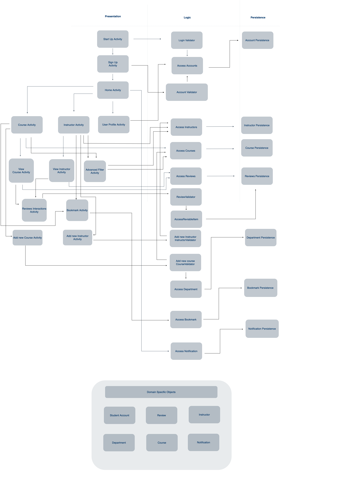

The Beginning of the End
We came into Comp 3350 with big goals in mind. Right from the start, we all agreed that we wanted to make something we were proud of. This, dear readers, is the first sin we commited. For, you see, we were about to learn (the very hard way) that systems can often implode exponentially -- all in an instant. Before you know it, you have at least 70 files and dependencies to monitor and maintain throughout all iterations.
We took the estimate of 3-4 features per iteration and SPRINTED with it. Literally, the entirety of our project was basically completed through caffeine-fueled sprints.
By the end of iteration 0, this was the list of features we planned to release per milestone:
Iteration 1: Basic Functionality and Core Framework
- Account Management
- Priority: High
- Cost: 2 days
- Registered students can create, manage, and personalize their accounts
- Course and Instructor Discovery
- Priority: High
- Cost: 4 days
- Anyone who is using Student Echo can search and view existing courses and instructors
- User Reviews
- Priority: High
- Cost: 4 days
- Registered students can write, edit, and delete their reviews for courses and instructors
Iteration 2: Advanced Interaction and Content Creation
- Content Contribution
- Priority: High
- Cost: 2 days
- Registered students can add new courses and instructors (that do not exist yet) to Student Echo
- Content Moderation
- Priority: High
- Cost: 4 days
- Student Echo enforces content moderation guidelines to ensure safety of students and professors
- Review Interaction
- Priority: Medium
- Cost: 2 days
- Registered students can interact with other reviews on Student Echo
Iteration 3: Enhancements and User Experience
- Advanced Search Options
- Priority: Medium
- Cost: 3 days
- Anyone who is using Student Echo can find courses and instructors that meet their specified criteria
- Action System
- Priority: Medium
- Cost: 4 days
- Registered students are informed about updates on their reviews, bookmarked courses and instructors, and other relevant events
- Account Summary
- Priority: Low
- Cost: 1 day
- Student Echo generates a personalized summary of a registered student’s activity and history
- Review Analytics
- Priority: Low
- Cost: 1 day
- Student Echo generates a personalized summary of a registered student’s reviews
- Student Echo Help
- Priority: Low
- Cost: 1 day
- Student Echo provides general support and answers to FAQ
And thus marks the beginning of the end.
The Final Product (So Far)
By the end of the final milestone, we were left with this lovecraftian abomination of a system architecture diagram. Perhaps it isn't the worst thing to exist ever, but trust us, it is a pain and a half to navigate through all these dependencies as baby developers.
In the third release of Student Echo, we have 3 layers: presentation, business, and persistence. We also have unit, integration, and system tests in another folder. The presentation layer unsurprisingly took the least time and effort to complete, especially given Android Studio's IDE. On the other hand, the tests absolutely demolished our sanity as it required the discovery, hunting, and eventual killing of the many bugs in our system.
What We Learned
Yay Communication and Coordination!
There was a bit of an adjustment period in the group, where we were figuring out what strategies and approaches worked best for us.
At the start of iteration 1, our plan was to give everyone a week to complete their developer tasks and start merging everything together during the second half of the milestone. However, we soon realized how much harder it was to communicate our ideas and initiate code reviews online. This was further solidified in iteration 2, where we carried out the same strategy.
We saw an improvement in these areas by the end of iteration 3, as we decided to shift towards an approach that emphasized in-person meetings and coding sessions. Due to the size and nature of the project, we often came across lines of code that require further clarification from the original author. It was much easier to interact and explore these gaps of knowledge in person rather than through texts.
This change in approach cut down our wait time for responses significantly, and ultimately accelerated our progress for iteration 3. Plus, it gave Kelly more excuses to yap her heart out (this is a self callout).
System Tests: We don't like em but we need them.
We learned how (unfortunately) crucial testing was in ensuring the functionality of our entire codebase.
Iteration 3 was set to be finished much earlier than the previous two cycles due to our change in work strategy. However, there were a couple of setbacks that may or may not have pushed us back to 4 hours. We have two words to explain: system, tests.
As it turned out, our database was severely compromised, a fact we only found out when our system tests failed upon execution. This bug led us to the discovery that our database had been repeatedly overwriting itself each time it reverted to the login page.
It is amazing how something so small can cause so much pain. Let us take the time to send deepest condolences to the poor, unfortunate souls who had the privilege of debugging this issue.
The End
In retrospect, we definitely bit off more than we could chew and the quality of our code suffered as a result. Despite all the mishaps we faced throughout the term, this project helped us improve both our technical and non-technical skills. From testing, system planning, and working collaboratively: we'd like to claim that we've grown a lot as developers after this project.
Student Echo is the result of unhinged workflows, twelve hour merge meetings, last-minute hotfixes, many (many) tears, too much caffeine, and sleep deprivation. But, it was also the culmination of hardwork, commitment, talent, and cooperation from every member in the team.
Walking out of this course, we can safely say that we are extremely proud of what we've accomplished with Student Echo and the fact that we actually had fun throughout the process. Trust, the twelve hour merge meetings involved a lot of yapping, gossiping, and getting to know the interesting people that make up Student Echo's dev team. Moving forward, we are excited to apply the skills we've gained and honed from this experience.